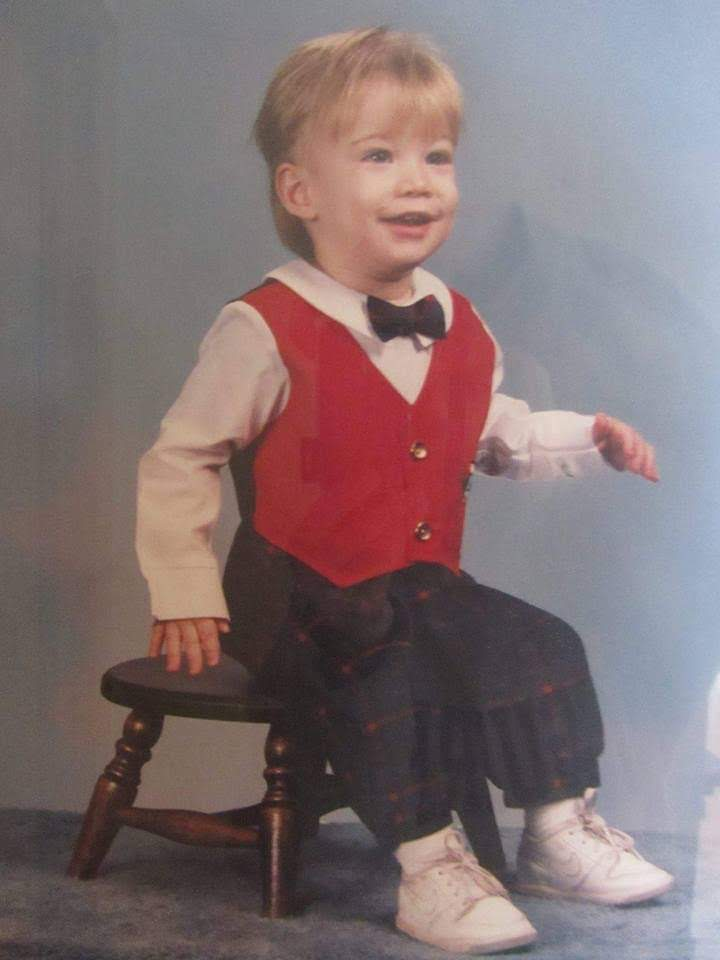

Dylan Harrington
Dylan Harrington is a disabled OIR Navy veteran and former CTR2(SW) who served aboard the USS O'Kane (DDG-77). He graduated summa cum laude from Southern New Hampshire University with a BA in English and Creative Writing, and is a proud member of the Golden Bears community and MFA student at Concordia University, St. Paul (CSP Global). His literary focus centers heavily on experimentalism.
He is an advocate for the survivors of the North Fox Island abuse ring and resides in Michigan with his wife and children. He is also the founder of The Open Sores Project, an aspiring not-for-profit organization that seeks to amplify the voices of individuals living with trauma and disabilities.
"This writer has proved volatile and difficult to work with. He is the first and only writer on our blacklist."
— OPEN: Journal of Art & Letters (June, 2026)
Selected Work
- "Wish you were Here" (Hybrid) – Published in Blood Tree Literature (Issue 17, July 2026)
- "Dissociation and Disillusionment" – Published in Infocalypse Arts & Literary Magazine (Issue 3: All We Ever Wanted Was Everything, July 2026)
- The War Horse – Navy Veteran Creates His Own PTSD Treatment
- "Note: Entropy" (Poetry) & "Discharge: [CTL+A] Liability" (Visual Art) – Published in Double Dutch Magazine (Issue No. 5, September 2026)
- Punt Volat – America, Land of...
- Forthcoming: Featured in Painted Pebble Literary Magazine (Issue 10, January 2027)
- Tales from the Toiletside: A Metamorphosis and Other Absurdities – Available via Amazon KDP (Crisis-Writing Collection)
Current Projects
- Anomie – A work of experimental weird fiction exploring systemic collapse and alienation. (In Progress)
- The Liminal – A surreal metafiction novel. (In Progress)
Advocacy & Projects
- ABC News Detroit (WXYZ) – "North Fox Island memorial honors survivors of decades-old abuse ring"
- TV 7&4 (UpNorthLive) – "Memorial planned on North Fox Island to mark 1970s child sex abuse case"
- Traverse City Record-Eagle – "Cadillac man petitions for North Fox Island monument" (Print/Paywall)
- Audio Interview – On Advocacy Efforts for North Fox Island (WTCM Radio)
- The Open Sores Project – Manifesto Portal | Facebook | Patreon
